Buku ini menceritakan perjalanan hidup Alif, seorang anak Minang yang menempuh pendidikan di pondok pesantren Madani.
Awalnya penuh keraguan, namun perlahan Alif menemukan makna perjuangan, persahabatan, dan kekuatan impian.
"Man Jadda Wajada - Siapa yang bersungguh-sungguh, dia akan berhasil."
Kalimat itu menjadi semangat utama dalam buku ini. Kisah yang ditulis berdasarkan pengalaman nyata ini sangat menginspirasi,
terutama bagi pelajar yang sedang mengejar mimpi mereka. Penulis berhasil menyampaikan pesan-pesan moral melalui narasi yang hidup.
Buku ini cocok dibaca oleh remaja dan orang dewasa yang sedang mencari motivasi hidup. Cerita persahabatan, perjuangan, dan cinta belajar
membuatnya menyentuh dan relevan bagi pembaca di berbagai usia.
★★★★★
Bedah Buku: Laskar Pelangi
Ditulis oleh: Andrea Hirata
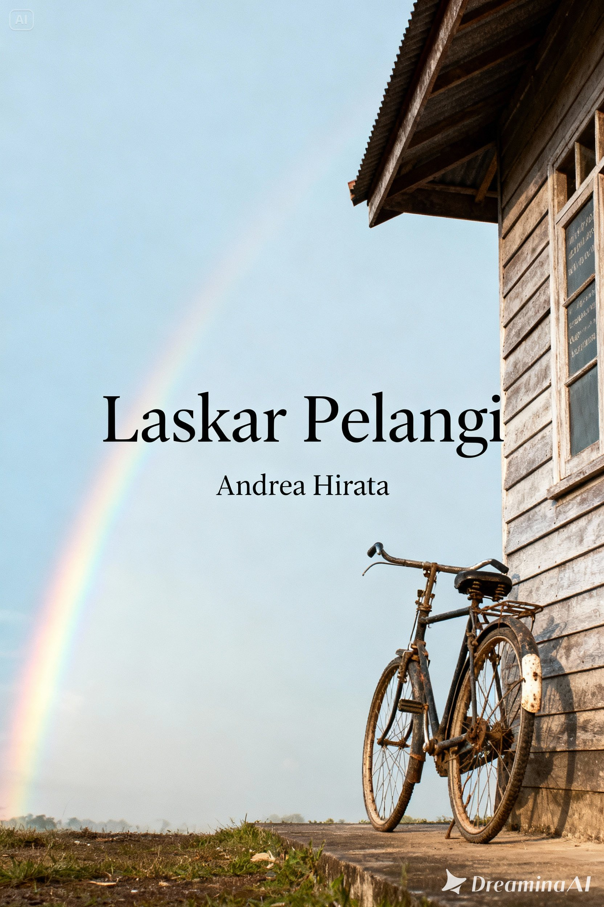
Buku ini menceritakan kisah sepuluh anak miskin di Belitung yang berjuang untuk mendapatkan pendidikan di sekolah Muhammadiyah.
Mereka menghadapi berbagai tantangan ekonomi dan sosial, namun semangat mereka untuk belajar membuat mereka seperti laskar pelangi.
"Kami bukanlah orang-orang kaya, tapi kami kaya akan mimpi dan semangat."
Kutipan itu menjadi inti dari buku ini. Cerita yang diangkat dari pengalaman penulis ini menginspirasi pembaca tentang pentingnya pendidikan
dan ketekunan. Andrea Hirata berhasil menggambarkan kehidupan anak-anak di daerah terpencil dengan cara yang mengharukan.
Buku ini sangat cocok untuk remaja dan orang tua yang ingin mengingatkan tentang nilai pendidikan. Kisah persahabatan, perjuangan,
dan harapan membuatnya menjadi bacaan yang mendalam dan relevan di era modern.
★★★★★
Bedah Buku: Limitless Mind: 7 Cara Melatih Otak untuk Belajar Lebih Cepat dan Berpikir Lebih Jernih
Ditulis oleh: Rayhan Prakoso, M.Neuroscience
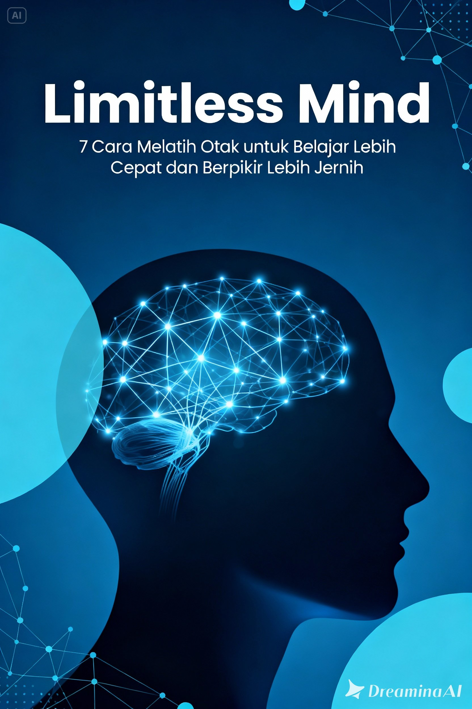
Buku ini mengungkap rahasia neuroscience untuk meningkatkan kemampuan otak dalam belajar dan berpikir. Dengan pendekatan ilmiah,
penulis memberikan 7 cara praktis yang bisa diterapkan sehari-hari untuk melatih otak agar lebih efisien.
"Otak kita seperti otot; semakin sering dilatih, semakin kuat kemampuannya."
Rayhan Prakoso, sebagai ahli neuroscience, menyampaikan informasi yang mudah dipahami tanpa jargon berlebihan. Buku ini sangat berguna
bagi siapa saja yang ingin meningkatkan produktivitas dan kecerdasan kognitif.
Cocok dibaca oleh pelajar, profesional, dan siapa pun yang ingin mengoptimalkan potensi otak mereka. Dengan contoh-contoh nyata
dan latihan harian, buku ini menjadi panduan yang inspiratif dan aplikatif.
★★★★★
Bedah Buku: Sketsa Harian: 30 Hari Belajar Menggambar untuk Pemula yang Tak Pernah Percaya Bisa
Ditulis oleh: Mira "SketsaKota" Anggraini
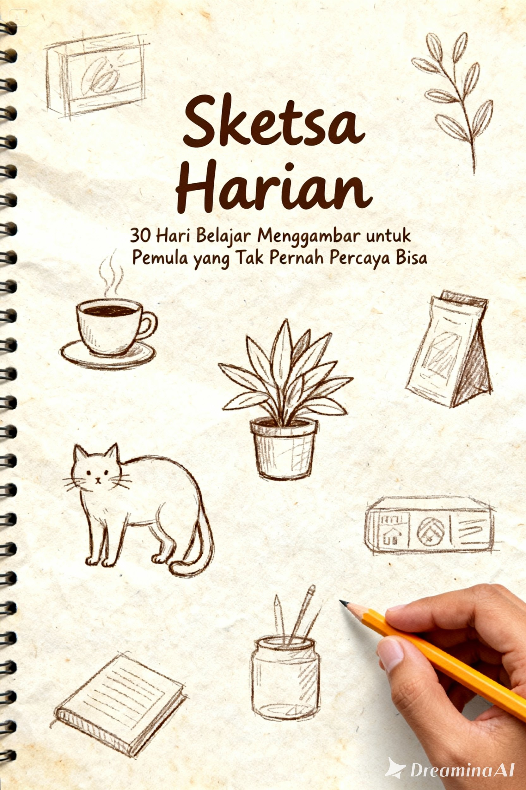
Buku ini dirancang khusus untuk pemula yang merasa tidak berbakat dalam menggambar. Dengan program 30 hari, Mira mengajak pembaca
belajar langkah demi langkah, mulai dari garis dasar hingga sketsa kompleks.
"Menggambar bukan tentang bakat, tapi tentang latihan dan keyakinan diri."
Penulis yang dikenal sebagai SketsaKota memberikan motivasi dan tips sederhana yang membuat proses belajar menjadi menyenangkan.
Buku ini membuktikan bahwa siapa pun bisa belajar seni visual dengan konsistensi.
Ideal untuk anak-anak, remaja, dan orang dewasa yang ingin mengeksplorasi kreativitas. Dengan ilustrasi yang jelas dan latihan harian,
buku ini membantu membangun kepercayaan diri dalam berkarya.
★★★★★
Bedah Buku: Bisnis itu Bukan Cuan Doang: Membangun Brand yang Bermakna di Era Media Sosial
Ditulis oleh: Sarah Wijaya & Tim Sociable ID
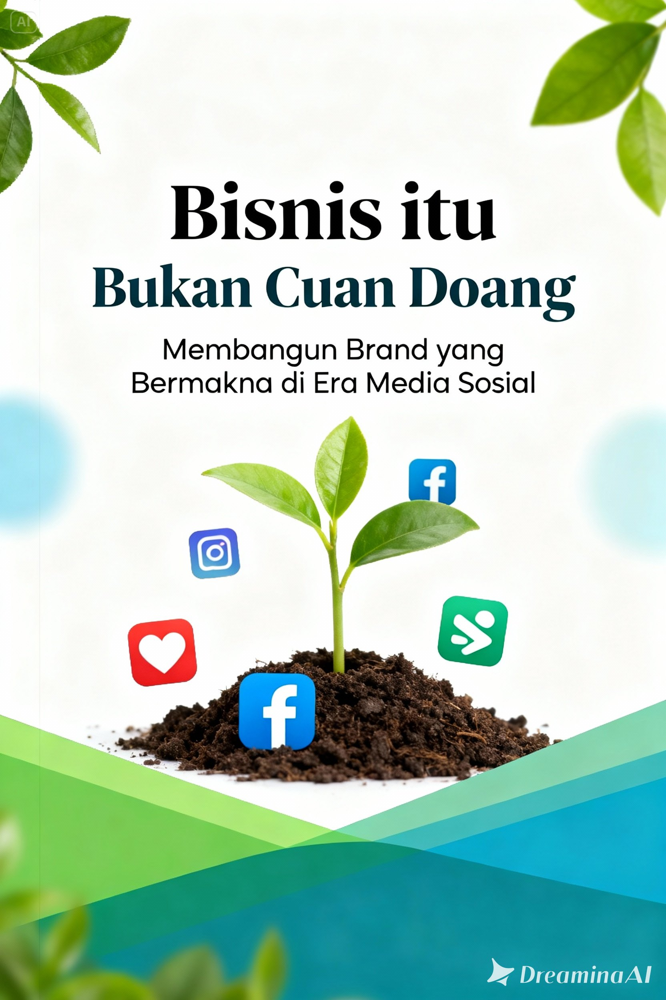
Buku ini mengubah perspektif tentang bisnis di era digital. Lebih dari sekadar mencari keuntungan, penulis menekankan pentingnya
membangun brand yang bermakna dan berdampak positif melalui media sosial.
"Brand yang kuat bukan hanya tentang penjualan, tapi tentang cerita yang menyentuh hati."
Sarah Wijaya dan timnya memberikan strategi praktis untuk entrepreneur modern. Dari content creation hingga engagement,
buku ini menjadi panduan lengkap untuk membangun bisnis yang sustainable.
Cocok untuk pebisnis, content creator, dan siapa pun yang ingin memulai usaha di dunia digital. Dengan studi kasus nyata
dan tips actionable, buku ini membantu menciptakan brand yang tidak hanya menguntungkan tapi juga meaningful.
★★★★★
Bedah Buku: Parenting di Era Gadget: Dari Konflik Screen Time ke Kolaborasi Digital yang Sehat
Ditulis oleh: Dr. Fitriani, M.Si., Psikolog Anak & Remaja
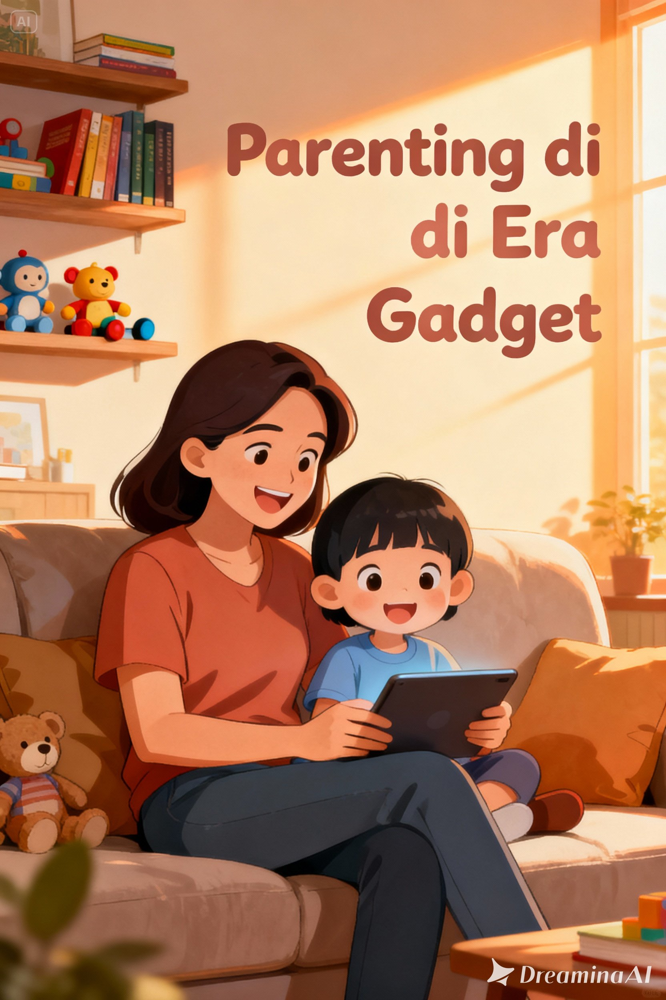
Buku ini menjadi panduan bagi orang tua di era teknologi. Dr. Fitriani mengubah konflik screen time menjadi peluang untuk
kolaborasi digital yang positif antara orang tua dan anak.
"Teknologi bukan musuh, tapi alat untuk membangun hubungan yang lebih kuat."
Sebagai psikolog anak dan remaja, penulis memberikan wawasan ilmiah tentang dampak gadget terhadap perkembangan anak.
Buku ini menawarkan solusi praktis untuk mengelola penggunaan teknologi secara sehat.
Sangat direkomendasikan untuk orang tua, guru, dan siapa pun yang terlibat dalam pendidikan anak. Dengan pendekatan yang empati
dan berbasis evidence, buku ini membantu menciptakan lingkungan digital yang mendukung pertumbuhan anak.
★★★★★
Bedah Buku: Sang Pemimpi
Ditulis oleh: Andrea Hirata
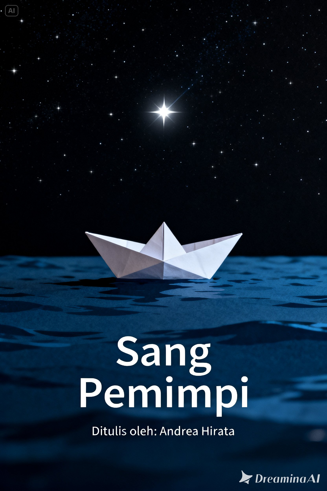
Buku ini melanjutkan kisah Ikal dan teman-temannya setelah lulus dari SD Muhammadiyah. Ikal mengejar mimpinya menjadi penulis,
menghadapi tantangan kehidupan di Jakarta dan pergulatan batin untuk tetap setia pada impiannya.
"Mimpi adalah kunci untuk membuka pintu masa depan, tapi perjuanganlah yang membuatnya nyata."
Kutipan itu mencerminkan esensi buku ini. Andrea Hirata kembali menghadirkan narasi yang mengharukan tentang persahabatan,
cinta, dan ketekunan. Kisah ini menginspirasi pembaca untuk tidak pernah menyerah pada mimpi mereka.
Buku ini cocok untuk remaja dan dewasa muda yang sedang mencari motivasi. Dengan gaya penulisan yang ringan namun mendalam,
buku ini menjadi bacaan wajib bagi siapa saja yang percaya pada kekuatan mimpi.
★★★★★
Bedah Buku: Ranah 3 Warna
Ditulis oleh: Ahmad Fuadi
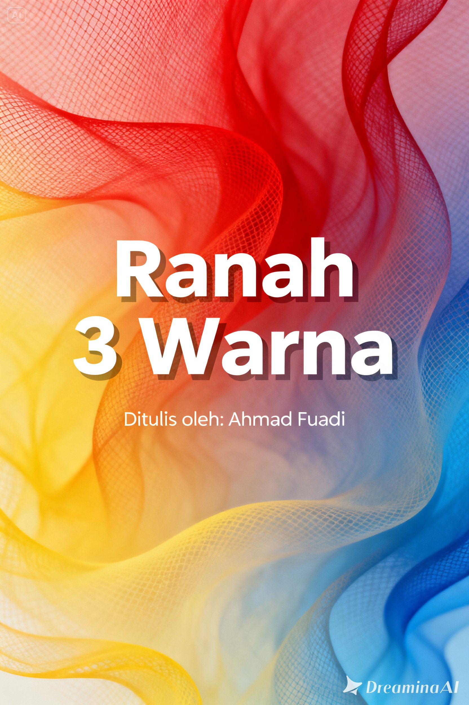
Buku ini mengikuti perjalanan Alif Fikri di pesantren Madani, tempat ia belajar tentang disiplin, persahabatan, dan identitas diri.
Cerita ini mengeksplorasi tema toleransi dan keberagaman di tengah masyarakat yang beragam.
"Hidup ini seperti ranah tiga warna: hitam, putih, dan abu-abu. Belajarlah menerima semua warna itu."
Ahmad Fuadi menyampaikan pesan tentang pentingnya toleransi dan pemahaman antar sesama. Buku ini sangat relevan di era globalisasi,
di mana perbedaan sering menjadi sumber konflik.
Ideal untuk remaja dan orang dewasa yang ingin belajar tentang nilai-nilai kehidupan. Dengan narasi yang kuat dan karakter yang relatable,
buku ini menjadi inspirasi untuk membangun masyarakat yang lebih harmonis.
★★★★★
Bedah Buku: Rantau 1 Muara
Ditulis oleh: Ahmad Fuadi
Buku ini menceritakan kisah Alif yang kembali ke kampung halamannya setelah bertahun-tahun merantau. Ia menghadapi dilema antara
tradisi dan modernitas, serta tantangan membangun masa depan di daerahnya sendiri.
"Rantau adalah perjalanan, tapi muara adalah pulang ke rumah."
Kutipan tersebut menjadi tema utama buku ini. Ahmad Fuadi menggambarkan pergulatan batin seorang pemuda yang mencari jati diri
di antara dua dunia. Cerita ini menginspirasi tentang pentingnya akar dan identitas budaya.
Buku ini cocok untuk pembaca yang sedang merenungkan arti pulang dan membangun masa depan. Dengan bahasa yang indah dan penuh makna,
buku ini menjadi bacaan yang mendalam dan penuh refleksi.
★★★★★
Bedah Buku: Guru Aini
Ditulis oleh: Andrea Hirata
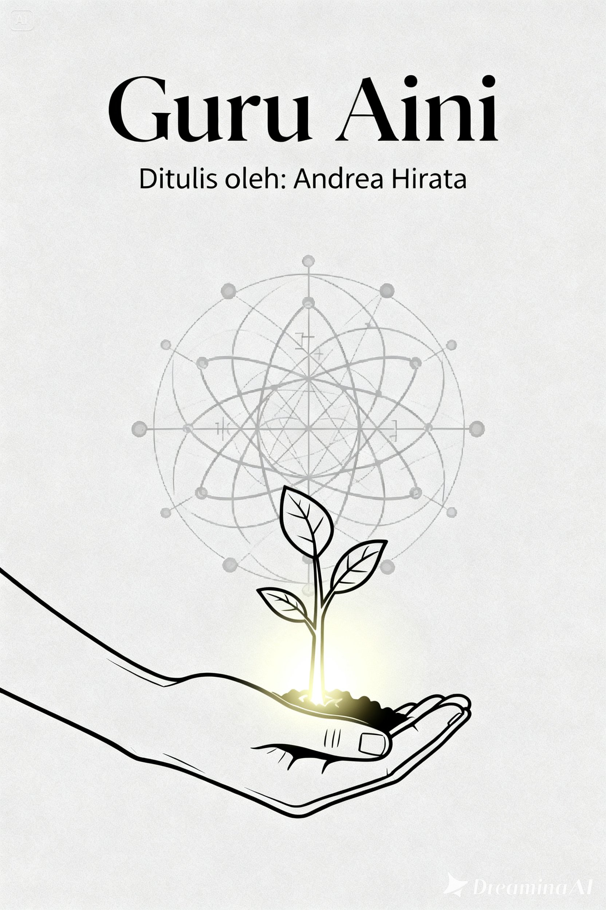
Buku ini mengisahkan perjuangan seorang guru bernama Aini di sebuah sekolah terpencil. Ia menghadapi keterbatasan fasilitas
namun tetap berkomitmen untuk mendidik anak-anak dengan hati dan dedikasi luar biasa.
"Seorang guru bukan hanya mengajar, tapi juga membentuk karakter dan masa depan."
Andrea Hirata kembali menghadirkan kisah inspiratif tentang dunia pendidikan. Buku ini mengingatkan kita tentang peran penting
guru dalam membangun generasi penerus bangsa.
Sangat direkomendasikan untuk guru, orang tua, dan siapa saja yang peduli dengan pendidikan. Dengan cerita yang menyentuh hati,
buku ini menjadi tribute untuk para pendidik di seluruh dunia.
★★★★★
Bedah Buku: Ayah
Ditulis oleh: Andrea Hirata
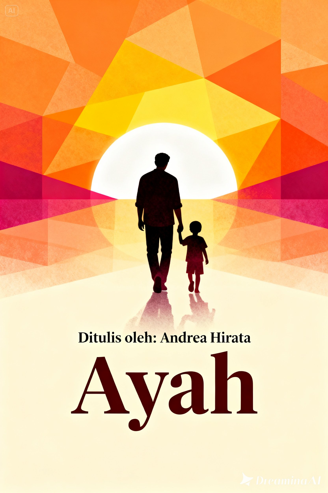
Buku ini menceritakan kisah seorang ayah yang rela berkorban untuk anak-anaknya. Melalui sudut pandang anak, pembaca diajak
merenungkan arti kasih sayang, pengorbanan, dan peran ayah dalam keluarga.
"Ayah adalah pilar keluarga, yang berdiri tegap meski badai datang."
Andrea Hirata menyajikan narasi yang emosional dan penuh kehangatan. Buku ini menginspirasi tentang pentingnya nilai-nilai keluarga
dan pengorbanan tanpa pamrih.
Cocok untuk anak-anak, remaja, dan orang dewasa yang ingin menghargai peran orang tua. Dengan cerita yang sederhana namun mendalam,
buku ini menjadi bacaan yang mengharukan dan penuh makna.
★★★★★
Bedah Buku: Maze Runner
Ditulis oleh: James Dashner
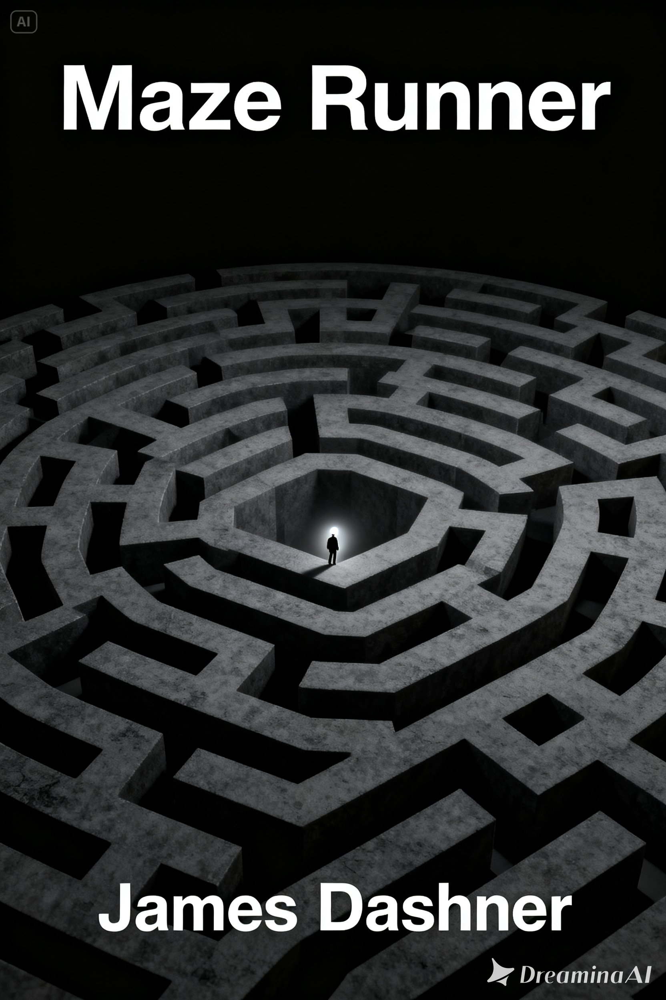
Petualangan distopia yang mendebarkan tentang sekelompok remaja terjebak di labirin, berjuang untuk bertahan hidup dan mengungkap rahasia.
"Petualangan yang mendebarkan di labirin misterius."
Kutipan itu menjadi inti dari buku ini. James Dashner menyampaikan pesan-pesan tentang keberanian dan persahabatan melalui narasi yang hidup.
Buku ini cocok dibaca oleh remaja umur 13 tahun ke atas. Cerita yang mendebarkan membuatnya relevan dan inspiratif.
★★★★★
Bedah Buku: Sebuah Seni untuk Bersikap Bodo Amat
Ditulis oleh: Mark Manson
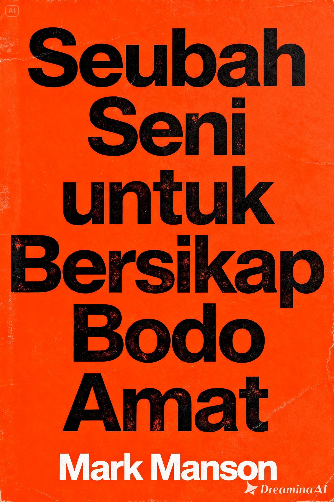
Pendekatan kontraintuitif untuk hidup bahagia dengan menerima kebenaran yang tidak nyaman dan fokus pada hal yang penting.
"Pendekatan kontraintuitif untuk hidup bahagia."
Kutipan itu menjadi inti dari buku ini. Mark Manson menyampaikan pesan-pesan tentang kehidupan melalui narasi yang hidup.
Buku ini cocok dibaca oleh dewasa umur 20 tahun ke atas. Pendekatan yang unik membuatnya relevan dan inspiratif.
★★★★★
Bedah Buku: Atomic Habits
Ditulis oleh: James Clear
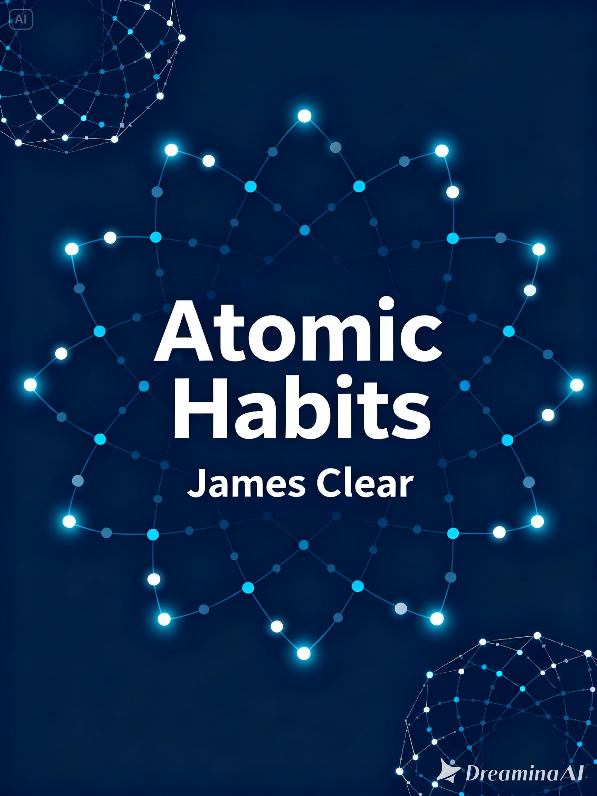
Cara mudah dan terbukti untuk membangun kebiasaan baik dan menghilangkan kebiasaan buruk, menghasilkan hasil yang luar biasa.
"Cara mudah untuk membangun kebiasaan baik."
Kutipan itu menjadi inti dari buku ini. James Clear menyampaikan pesan-pesan tentang kebiasaan melalui narasi yang hidup.
Buku ini cocok dibaca oleh remaja umur 15 tahun ke atas. Pendekatan yang praktis membuatnya relevan dan inspiratif.
★★★★★
Bedah Buku: Si Anak Spesial
Ditulis oleh: Tere Liye
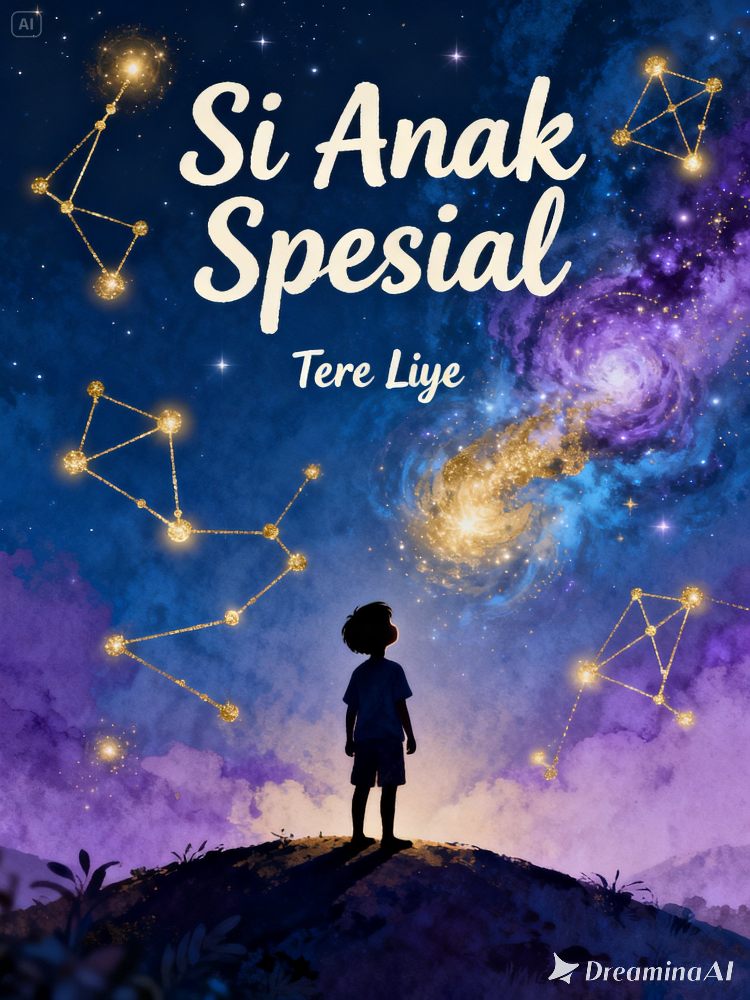
Kisah mengharukan tentang anak istimewa dan pelajaran tentang cinta, penerimaan, dan keluarga.
"Kisah mengharukan tentang cinta dan penerimaan."
Kutipan itu menjadi inti dari buku ini. Tere Liye menyampaikan pesan-pesan tentang keluarga melalui narasi yang hidup.
Buku ini cocok dibaca oleh remaja umur 12 tahun ke atas. Cerita yang mengharukan membuatnya relevan dan inspiratif.
★★★★★
Bedah Buku: Sherlock Holmes
Ditulis oleh: Arthur Conan Doyle
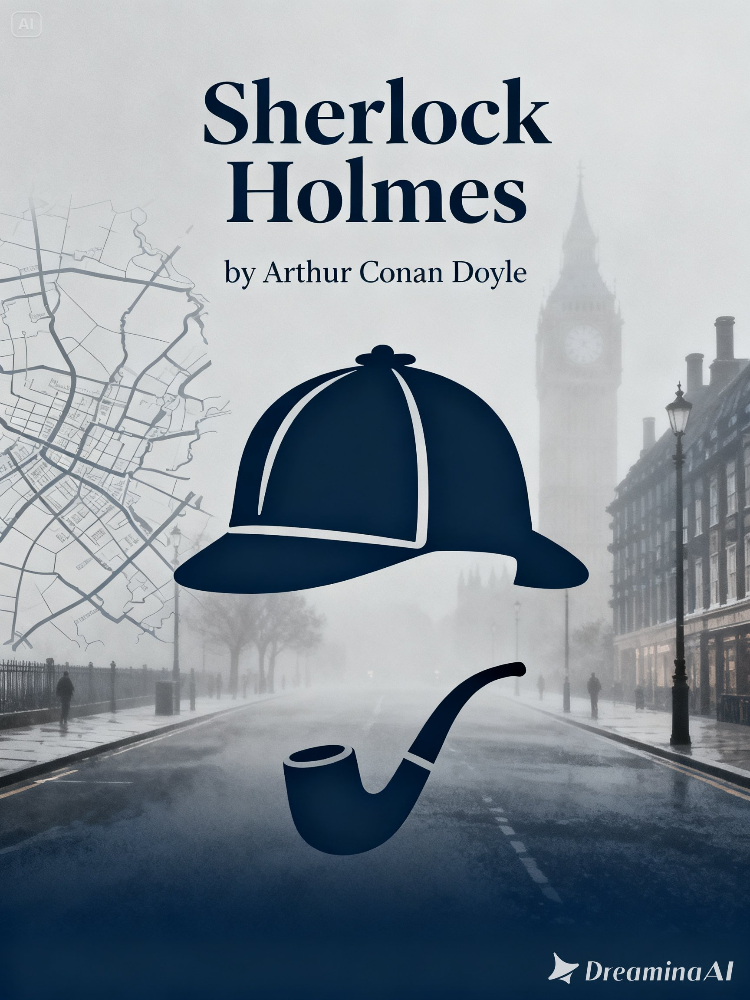
Kisah detektif klasik yang menampilkan Sherlock Holmes yang brilian memecahkan misteri rumit.
"Kisah detektif klasik yang brilian."
Kutipan itu menjadi inti dari buku ini. Arthur Conan Doyle menyampaikan pesan-pesan tentang kecerdasan melalui narasi yang hidup.
Buku ini cocok dibaca oleh dewasa umur 18 tahun ke atas. Cerita yang klasik membuatnya relevan dan inspiratif.
★★★★★
Bedah Buku: Perahu Kertas
Ditulis oleh: Dee Lestari
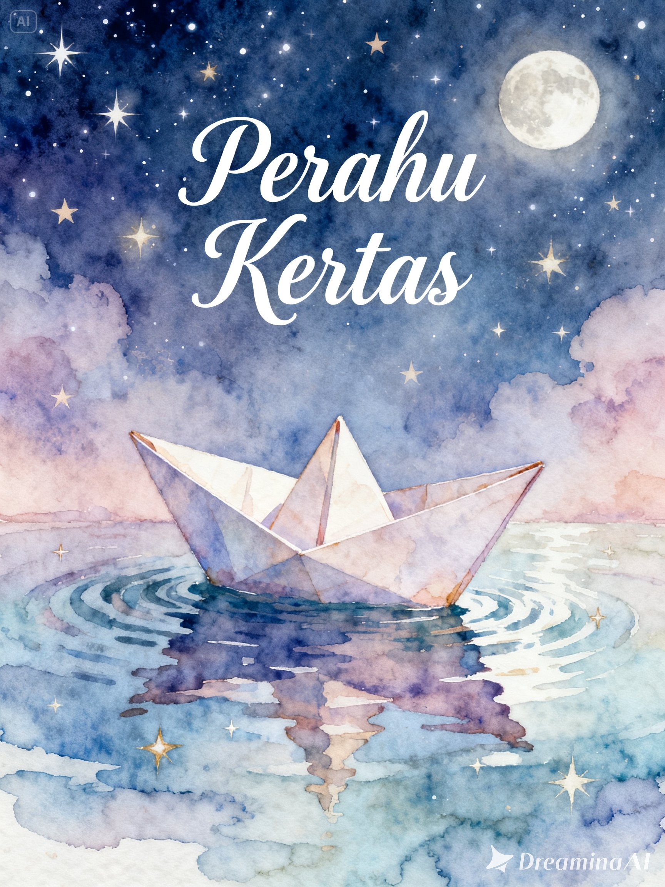
Kisah puitis tentang cinta, mimpi, dan perjalanan penemuan diri di kota kecil.
"Kisah puitis tentang cinta dan mimpi."
Kutipan itu menjadi inti dari buku ini. Dee Lestari menyampaikan pesan-pesan tentang penemuan diri melalui narasi yang hidup.
Buku ini cocok dibaca oleh remaja umur 14 tahun ke atas. Cerita yang puitis membuatnya relevan dan inspiratif.
★★★★★
Bedah Buku: Hujan
Ditulis oleh: Tere Liye
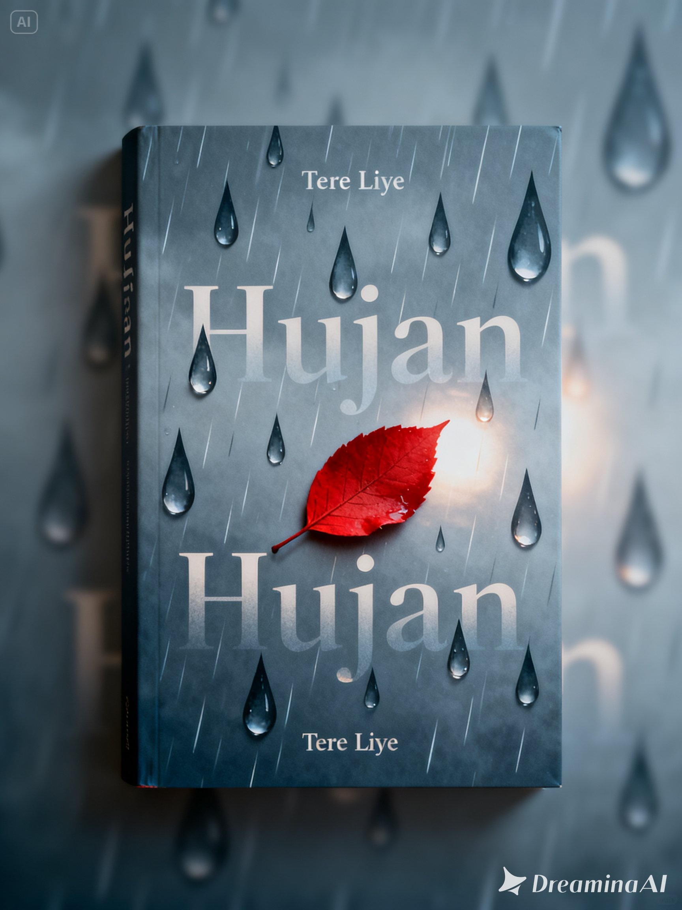
Kisah persahabatan, kehilangan, dan menemukan harapan di tengah hujan, menyentuh tema ketahanan.
"Kisah persahabatan dan harapan di tengah hujan."
Kutipan itu menjadi inti dari buku ini. Tere Liye menyampaikan pesan-pesan tentang ketahanan melalui narasi yang hidup.
Buku ini cocok dibaca oleh remaja umur 13 tahun ke atas. Cerita yang menyentuh membuatnya relevan dan inspiratif.
★★★★★
Bedah Buku: Bumi Manusia
Ditulis oleh: Pramoedya Ananta Toer
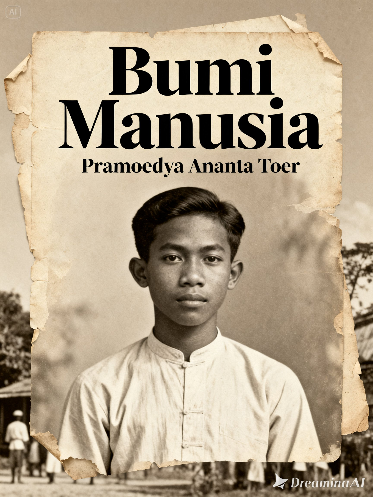
Novel sejarah yang menggambarkan perjuangan kemerdekaan Indonesia, kaya dengan wawasan budaya.
"Novel sejarah tentang perjuangan kemerdekaan."
Kutipan itu menjadi inti dari buku ini. Pramoedya Ananta Toer menyampaikan pesan-pesan tentang sejarah melalui narasi yang hidup.
Buku ini cocok dibaca oleh dewasa umur 20 tahun ke atas. Cerita yang kaya wawasan membuatnya relevan dan inspiratif.
★★★★★
Bedah Buku: Digital Minimalism
Ditulis oleh: Cal Newport
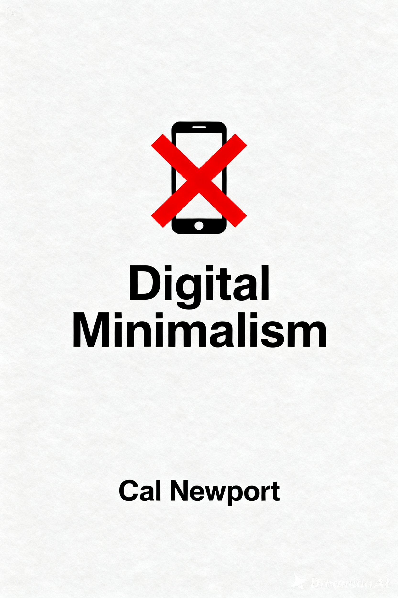
Filosofi untuk merebut kembali perhatian dan hidup lebih bermakna di era digital.
"Filosofi untuk hidup bermakna di era digital."
Kutipan itu menjadi inti dari buku ini. Cal Newport menyampaikan pesan-pesan tentang minimalisme digital melalui narasi yang hidup.
Buku ini cocok dibaca oleh dewasa umur 20 tahun ke atas. Pendekatan yang filosofis membuatnya relevan dan inspiratif.
★★★★★
Bedah Buku: The Shallows
Ditulis oleh: Nicholas Carr
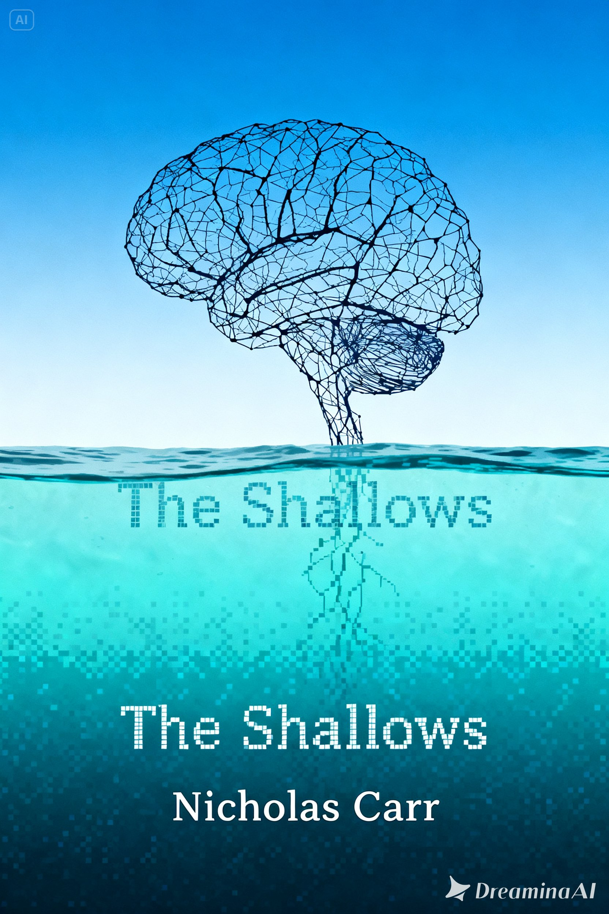
Bagaimana internet mengubah cara kita membaca, berpikir, dan mengingat.
"Bagaimana internet mengubah cara kita berpikir."
Kutipan itu menjadi inti dari buku ini. Nicholas Carr menyampaikan pesan-pesan tentang dampak internet melalui narasi yang hidup.
Buku ini cocok dibaca oleh dewasa umur 20 tahun ke atas. Analisis yang mendalam membuatnya relevan dan inspiratif.
★★★★★
Bedah Buku: You Are Not a Gadget
Ditulis oleh: Jaron Lanier
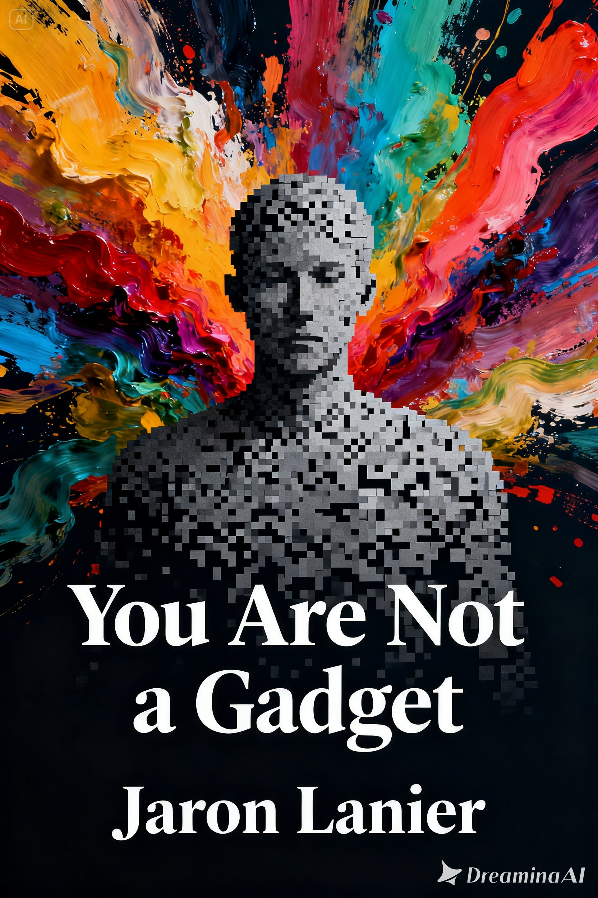
Manifesto melawan aspek dehumanisasi internet dan media sosial.
"Manifesto melawan dehumanisasi internet."
Kutipan itu menjadi inti dari buku ini. Jaron Lanier menyampaikan pesan-pesan tentang teknologi melalui narasi yang hidup.
Buku ini cocok dibaca oleh dewasa umur 20 tahun ke atas. Pendekatan yang kritis membuatnya relevan dan inspiratif.
★★★★★
Bedah Buku: Zero to One
Ditulis oleh: Peter Thiel
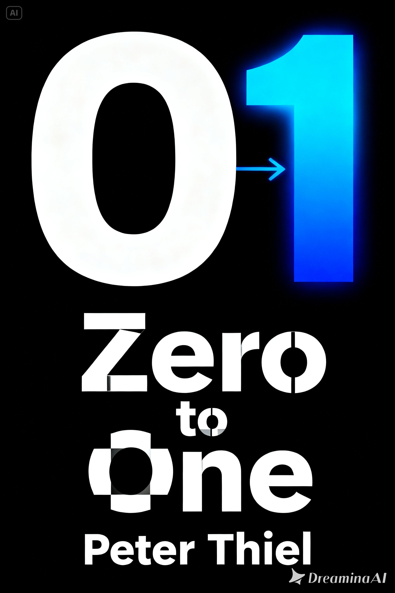
Catatan tentang startup, atau bagaimana membangun masa depan dengan menciptakan sesuatu yang baru.
"Catatan tentang membangun masa depan."
Kutipan itu menjadi inti dari buku ini. Peter Thiel menyampaikan pesan-pesan tentang inovasi melalui narasi yang hidup.
Buku ini cocok dibaca oleh dewasa umur 20 tahun ke atas. Wawasan tentang startup membuatnya relevan dan inspiratif.
★★★★★
Bedah Buku: Hooked
Ditulis oleh: Nir Eyal
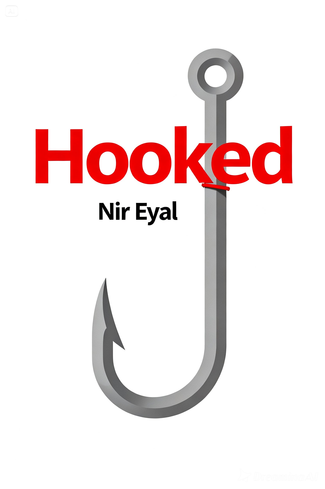
Cara membangun produk yang membentuk kebiasaan agar pengguna kembali.
"Cara membangun produk yang membentuk kebiasaan."
Kutipan itu menjadi inti dari buku ini. Nir Eyal menyampaikan pesan-pesan tentang desain produk melalui narasi yang hidup.
Buku ini cocok dibaca oleh dewasa umur 20 tahun ke atas. Strategi yang praktis membuatnya relevan dan inspiratif.
★★★★★
Bedah Buku: Crushing It!
Ditulis oleh: Gary Vaynerchuk
Menggunakan media sosial untuk membangun merek pribadi dan menghancurkan bisnis.
"Menggunakan media sosial untuk membangun merek."
Kutipan itu menjadi inti dari buku ini. Gary Vaynerchuk menyampaikan pesan-pesan tentang pemasaran melalui narasi yang hidup.
Buku ini cocok dibaca oleh dewasa umur 20 tahun ke atas. Pendekatan yang agresif membuatnya relevan dan inspiratif.
★★★★★
Bedah Buku: Neuromancer
Ditulis oleh: William Gibson
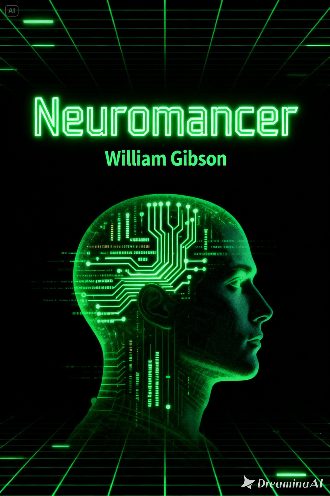
Klasik cyberpunk tentang hacker, kecerdasan buatan, dan realitas virtual.
"Klasik cyberpunk tentang realitas virtual."
Kutipan itu menjadi inti dari buku ini. William Gibson menyampaikan pesan-pesan tentang teknologi melalui narasi yang hidup.
Buku ini cocok dibaca oleh dewasa umur 18 tahun ke atas. Cerita yang futuristik membuatnya relevan dan inspiratif.
★★★★★
Bedah Buku: Snow Crash
Ditulis oleh: Neal Stephenson
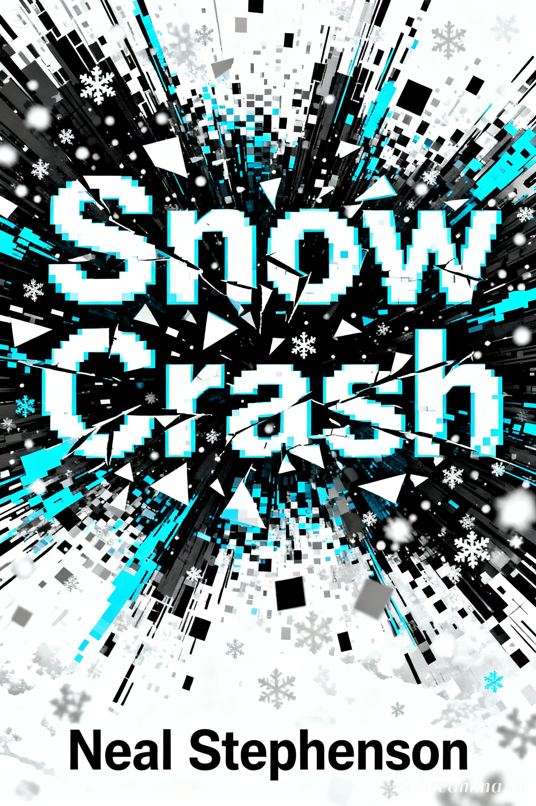
Petualangan cepat di dunia distopia realitas virtual dan konspirasi kuno.
"Petualangan cepat di dunia distopia."
Kutipan itu menjadi inti dari buku ini. Neal Stephenson menyampaikan pesan-pesan tentang realitas virtual melalui narasi yang hidup.
Buku ini cocok dibaca oleh dewasa umur 18 tahun ke atas. Cerita yang cepat membuatnya relevan dan inspiratif.
★★★★★
Bedah Buku: Artificial Intelligence Basics
Ditulis oleh: Tom Taulli
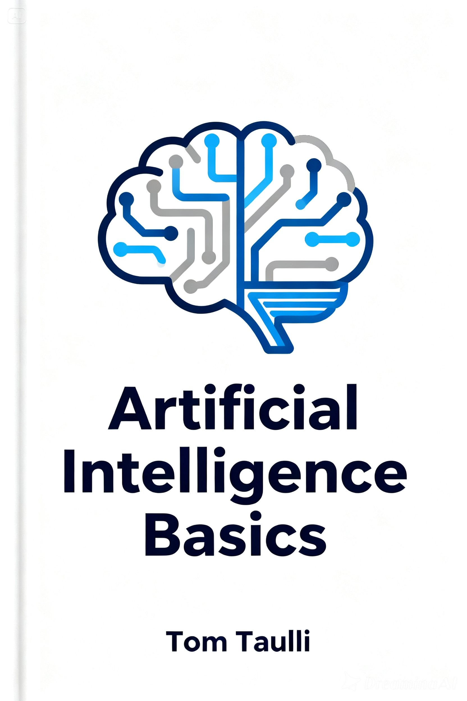
Pengantar konsep AI, aplikasi, dan masa depan teknologi.
"Pengantar konsep AI."
Kutipan itu menjadi inti dari buku ini. Tom Taulli menyampaikan pesan-pesan tentang kecerdasan buatan melalui narasi yang hidup.
Buku ini cocok dibaca oleh dewasa umur 20 tahun ke atas. Pendahuluan yang baik membuatnya relevan dan inspiratif.
★★★★★
Bedah Buku: Algorithms to Live
Ditulis oleh: Brian Christian & Tom Griffith
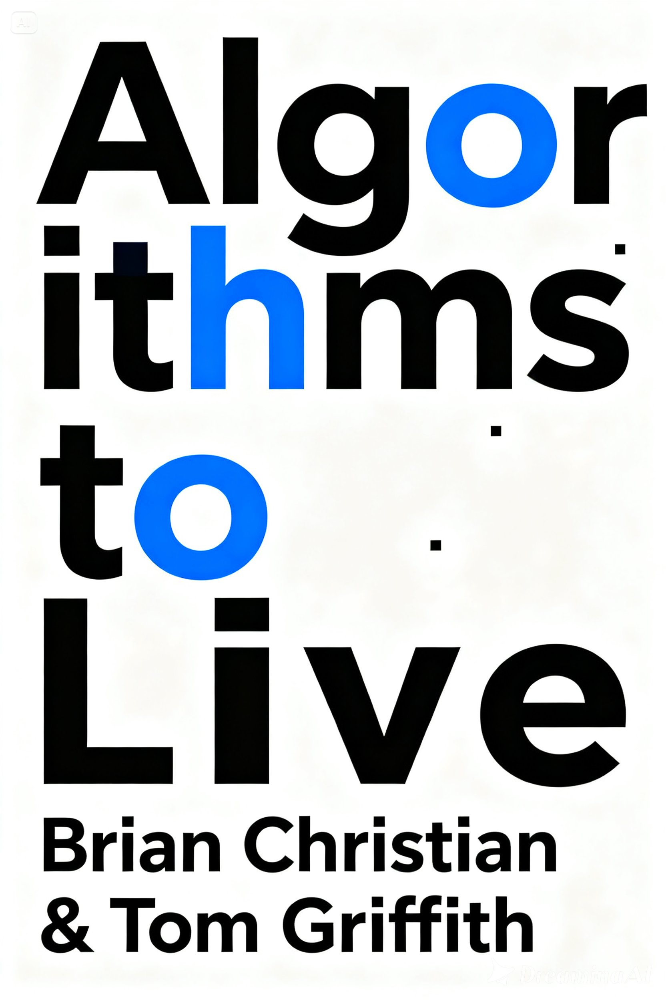
Bagaimana algoritma komputer membantu kita membuat keputusan yang lebih baik dalam kehidupan sehari-hari.
"Algoritma untuk kehidupan sehari-hari."
Kutipan itu menjadi inti dari buku ini. Brian Christian & Tom Griffith menyampaikan pesan-pesan tentang algoritma melalui narasi yang hidup.
Buku ini cocok dibaca oleh dewasa umur 20 tahun ke atas. Pendekatan yang unik membuatnya relevan dan inspiratif.
★★★★★
Bedah Buku: Data Science for Beginners
Ditulis oleh: Andrew Park
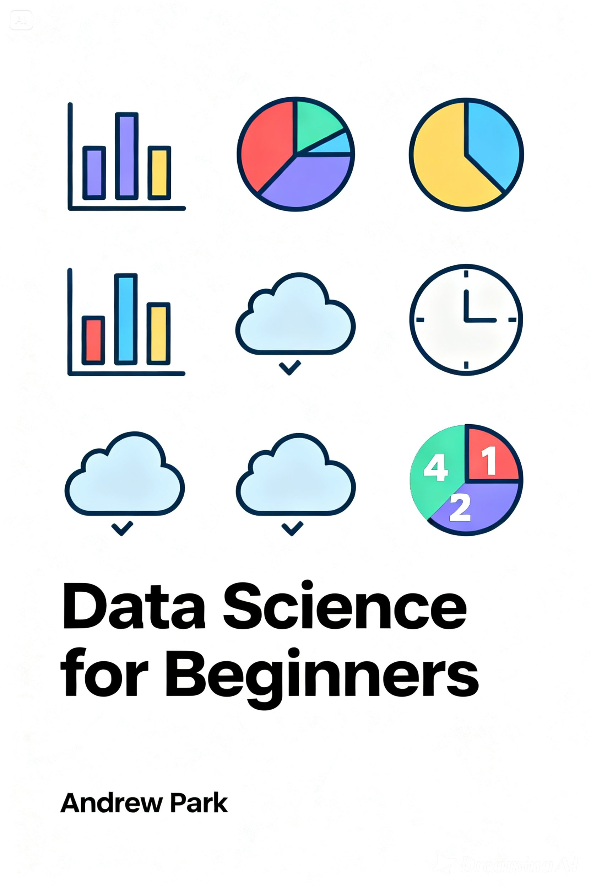
Panduan pemula untuk ilmu data, mencakup dasar statistik, pemrograman, dan analisis.
"Panduan pemula untuk ilmu data."
Kutipan itu menjadi inti dari buku ini. Andrew Park menyampaikan pesan-pesan tentang data science melalui narasi yang hidup.
Buku ini cocok dibaca oleh dewasa umur 20 tahun ke atas. Panduan yang mudah membuatnya relevan dan inspiratif.
★★★★★
Bedah Buku: The Fourth Industrial Revolution
Ditulis oleh: Klaus Schwab
Menjelajahi perubahan teknologi yang membentuk ulang masyarakat, ekonomi, dan industri.
"Perubahan teknologi yang membentuk ulang."
Kutipan itu menjadi inti dari buku ini. Klaus Schwab menyampaikan pesan-pesan tentang revolusi industri melalui narasi yang hidup.
Buku ini cocok dibaca oleh dewasa umur 20 tahun ke atas. Analisis yang mendalam membuatnya relevan dan inspiratif.